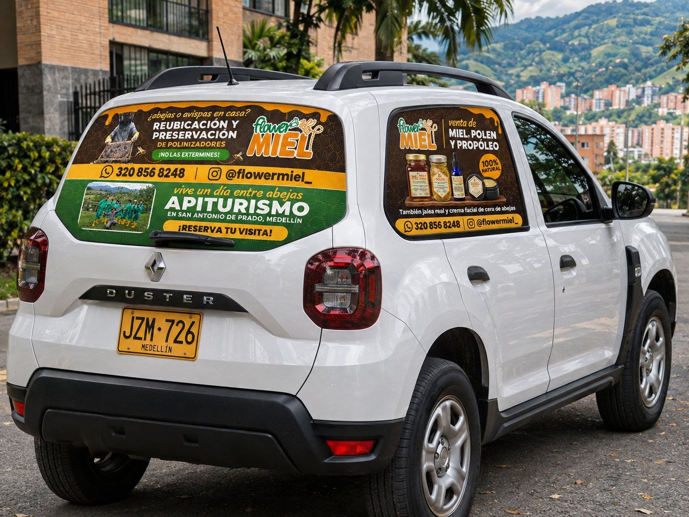
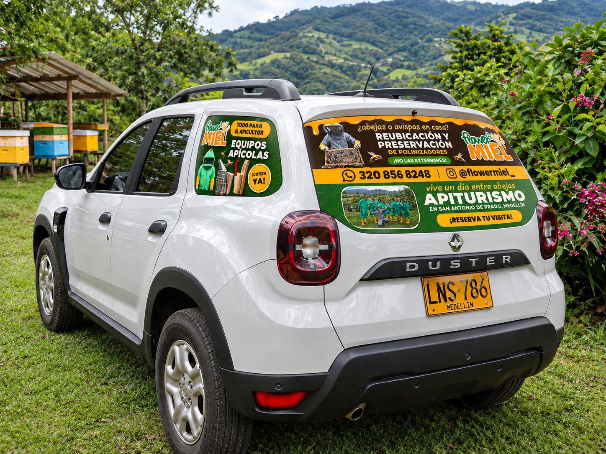

La Duster de Flower Miel
Modelo 3D de la camioneta con los tres vinilos puestos en sus vidrios, a su medida real. Arrastra para girarla, usa la rueda del mouse o pellizca para acercarte, y elige una vista con los botones.
Vidrio trasero 115 × 44 cm · productos en la puerta trasera derecha · equipos en la izquierda (46 × 30 cm cada uno).
Las tres piezas
Medidas finales de cada vidrio. Cada PDF lleva 1,5 cm de sobrante por lado.

Fotos simuladas
Simulación fotográfica hecha con IA, para tener una idea en un entorno real.


El modelo 3D respeta las medidas de la Duster (4,34 × 1,80 × 1,69 m) y de cada vidrio, para ver el tamaño real de los diseños sobre el carro; los detalles de carrocería son aproximados. Los PDF son a tamaño real y el instalador hace el recorte final sobre el vidrio: antes de imprimir, conviene que confirme las medidas en el carro.
Las fotos simuladas son de IA: la placa, el entorno y algunos textos pequeños son inventados. Los archivos de imprenta son los PDF de arriba.